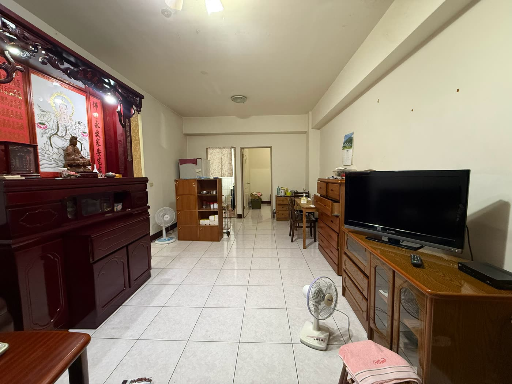
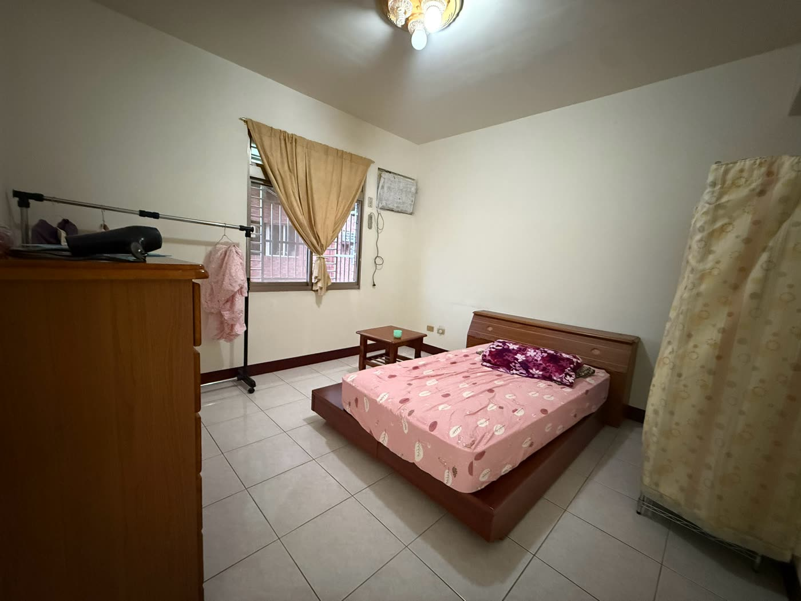
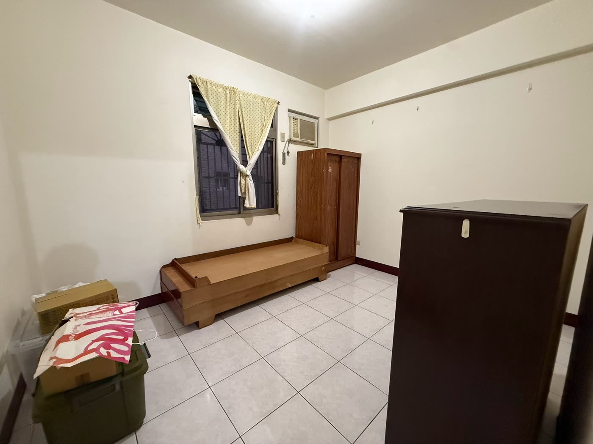
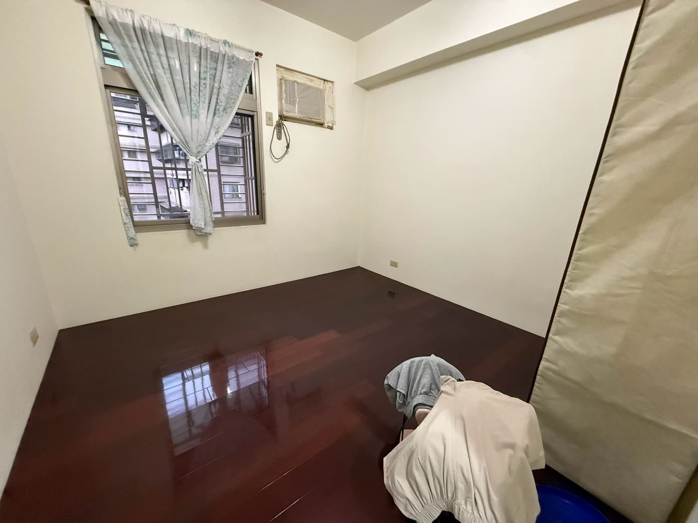
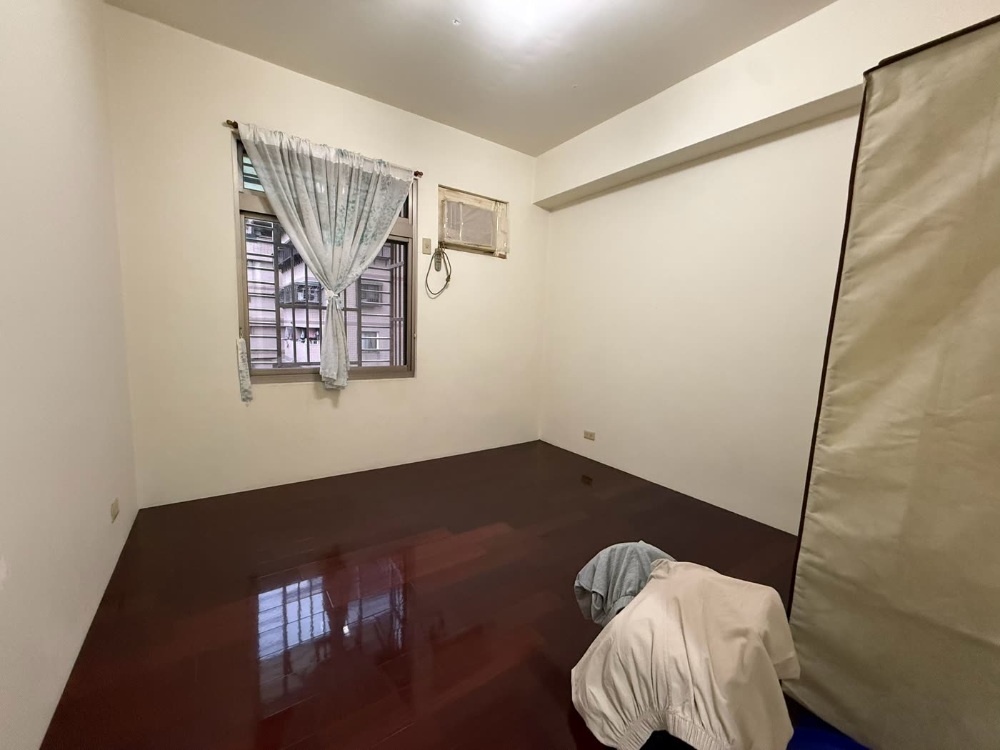

吉品名家A區 4樓新北板橋・金門街生活圈
預約看屋
3 房 2 廳 2 衛
電梯華廈
管理費 500 元／月
沒有車位
三房兩衛
開價 1698 萬（沒有車位） ｜建物登記 35.33 坪｜3 房 2 廳 2 衛
新北市板橋區・金門街生活圈｜吉品名家A區
開價 1698 萬 本案沒有車位，這個價格不含任何停車權利
建物登記 35.33 坪 主建物 23.40＋附屬 2.94＋共有部分 8.99
格局 3 房 2 廳 2 衛 法定用途：住家用
樓層與屋齡 4 樓・約 23.4 年 共 5 層／電梯華廈／RC 結構
你看到這一頁，價格就不是 1698 了
公開版面上的委託開價是 1698 萬 ，那個數字對所有人都一樣。但你已經來要資料、我也把屋況跟缺點整份攤開給你看了，所以這裡要講的是另一個數字。
粉絲福利價 1598 萬
這不是我自己喊出來給你點進來看的。是我拿著「真的有人在問」這件事去跟屋主談過，屋主本人同意的價格。 公開貼文我不會寫它——公開的價是給每一個人的，這個價是給已經願意坐下來談的人。
差這 100 萬，實際感覺是這樣 （沿用下方試算卡同一組條件：貸 8 成、30 年、年利率 2.435%）：頭期款少準備約 20 萬 ，每個月少繳約 3,100 元 。下方試算卡的數字仍是用 1698 萬跑的，你要看 1598 萬的完整版，用卡片下面那個工具改一下總價就好。
但我還是要老實講：這仍然不是成交價。 成交價要雙方簽約才算數，中間還有屋況複驗、銀行核貸成數、交屋條件這些變數，任何一項都可能再動。我能跟你保證的只有一件事——這個數字是我真的談過的 ，不是為了留住你隨口說的。
30 秒看懂
好的跟不好的
你已經拿到這一頁，代表你認真在看。那我就不留一半到私訊再講。
01
五層樓的華廈，但它有電梯
外觀是紅磚老華廈、只有五層，第一直覺會以為要爬樓梯。委託資料載明型態是電梯華廈，本戶在 4 樓。帶看那天請自己搭一次，順便看電梯的保養與檢查標示。
02
三間房、兩套衛浴，都有對外窗
委託資料的重點說明寫的是「邊間方正格局／三間房間＋雙衛浴均有對外窗／通風好採光佳」。暗房跟暗衛是二十幾年中古屋最常見的扣分項，這間依委託資料是沒有。
03
管理費 500 元，但沒有管理員
這句我自己先講。委託資料的管理方式欄寫的是「無管理員」。便宜的管理費跟沒有人幫你收包裹，是同一件事的兩面。
04
沒有車位
板橋，1698 萬，沒有車位，也不含任何停車權利。一定要有車位的，這間可以直接劃走，不用浪費你的時間。這是本案最大的取捨，我放在第一屏講，不埋在最後一段。
影片
32 秒
這是我發在社群的那支開箱片，有字卡、有配樂、最後八秒有法遵資訊條。畫面全部是現況實拍 ——沒有虛擬佈置、沒有 AI 美化、沒有電腦合成的裝潢示意圖。
你的瀏覽器無法播放此影片
封面停在「開價 0 萬」是刻意的，數字會在片頭跑上去。片子只有 32 秒，看得到的空間就是我手上有的素材——廚房、兩套衛浴、電梯轎廂這幾處沒有畫面，原因寫在下面
屋況直球
照片沒有修
現況是屋主自住，家具、擺設、生活痕跡都在，我不會叫屋主先收乾淨再拍給你看漂亮的。委託方另外提供了三張自帶「AI美化示意圖」「AI清空圖」標記的照片，本頁一張都沒有用 ——那不是這間房子現在的樣子。點照片可以放大看細節。

客廳：屋主目前在此設神明廳。天花板看得到明顯的樑，走道底端通往廚房方向

房間一（擺雙人床這間）：有對外窗，窗上裝鐵窗，窗邊牆面留有舊冷氣孔

房間二：有對外窗與鐵窗，牆上是窗型冷氣，不是分離式

房間三：地坪是深紅色木地板，跟客廳與另外兩間的白磁磚不一樣

房間三另一個角度：窗型冷氣周邊的窗框，照片上看得到膠帶與老化痕跡
社區外觀：門楣上的門牌與張貼物已打上馬賽克，那是為了不外流完整門牌，其餘畫面未修
三間房的窗外都是鄰棟建物，不是開闊景觀，這一點照片裡看得很清楚，我不另外形容。委託資料未標示哪一間是主臥，本頁依拍攝順序編號，不推定。照片與影片皆為現況實拍未經修飾，本頁不使用任何虛擬佈置或裝潢示意圖。
沒有照片就是沒有，我不補示意圖
目前拿到的現況素材裡，以下四項完全沒有畫面。我不會用示意圖、不會借別間房子的照片、也不會用 AI 生一張給你看 ——那三種做法都會讓你在帶看那天被嚇到。
廚房 ——只在客廳照片的走道底端看得到一點方向，本身沒有獨立照片。兩套衛浴 ——這很尷尬，因為「雙衛浴都有對外窗」正好是本案賣點之一，卻是最沒有畫面可以佐證的一項。要驗證只有現場看。電梯轎廂與梯廳 ——「五層樓有電梯」是這間的關鍵條件，我手上沒有轎廂照片。搭一次就知道，順便看保養與檢查標示。格局圖 ——委託資料沒有附。所以本頁不畫格局圖、不描述房間之間怎麼配置，也不寫任何面寬、深度的推估值。
這四項全部要靠帶看現場補。 你來的時候我會逐處拍給你，不是只拍好看的。屋主同意的話，補拍完我會直接更新這一頁。
重要條件
該講的我在這頁講完
這一頁是完整揭露版，不是等你私訊才肯講的版本。以下每一項都可以到現場、到謄本、到官方網站驗證。不外流的只有四件事：屋主個資、底價、鑑價、完整門牌 ，那是法遵，不是隱瞞。
1
沒有車位，也不含任何停車權利 委託資料的車位欄是「無」。這不是「車位另計」，是這個標的本身沒有車位。在板橋，這件事會直接決定你買不買。
不處理的風險 簽了才發現每天要繞路邊找位子，或臨時去租但附近沒得租；未來要轉手時，買方族群同樣被限縮一次，這一項不會因為時間過去而改善。
維修策略選項 不是修繕，是產品條件。三條路：①確認你是不是真的需要車位（沒車或用機車的人，這一項對你不扣分，反而是別人幫你把價格條件擋掉了）②帶看當天自己開車來一次，實際繞一圈看停車現況與周邊有無月租車位可洽詢 ③把「租車位」當成長期固定支出算進月支出，不是「以後再說」。
參考費用 無修繕費用，屬產品條件。 月租停車與路邊停車費用，70 部門修繕行情偵查表（70-0821-01）未收錄，本頁不編數字 ，以實際洽詢管委會、鄰近停車場與地方政府公告費率為準。本條不納入合計。
驗屋建議 不是驗屋項目。驗屋公司不負責停車。這一項靠你自己開車來一趟。
買方對策 預算： 無修繕費用；若確定要租車位，把月租金當固定支出加進月支出（房貸月付 53,215 元與管理費 500 元之外）。交易結構： 可要求賣方於不動產標的現況說明書明確記載無車位與有無專用使用權；開價不等於成交價，也不代表議價空間，最終金額由買賣雙方議定，本頁不暗示可議幅度。處理順序： 看屋前就決定，這是要不要來的門檻，不是來了再談的條件。阿宏協助： 陪你開車來繞一次、代問管委會與鄰近停車場有無月租、把有無車位的條件差異列進比價表。
2
沒有管理員，管理費 500 元／月 委託資料的管理方式欄寫「無管理員」、管理費欄寫 500 元。這兩件事是同一枚硬幣的兩面：便宜是真的便宜，沒有人幫你收包裹也是真的。
不處理的風險 包裹與掛號沒人代收、垃圾要自己配合清潔隊時間、公共區域清潔與電梯保養靠自治。更要緊的是電梯 ：屋齡二十幾年的電梯遲早要大修或汰換，那是全社區共同負擔；如果公共基金不足，未來可能要分攤一筆。這件事你在帶看那天問不到答案，要調文件。
維修策略選項 不是修繕，是查證：①向管委會（或社區管理組織）索取收支表與公共基金餘額 ②要電梯保養合約與最近一次大修／檢查的時間與紀錄 ③問社區規約（寵物、裝修時段、垃圾清運方式）。三份文件都拿到手，這一條才算查完。
參考費用 無個戶修繕費用，屬社區共同負擔。 電梯保養與大修屬社區共有部分，偵查表未收錄，本頁不編數字，以管委會實際收費與報價為準。本條不納入合計。
驗屋建議 驗屋公司只驗你買的那一戶，不驗社區公共設施。電梯與公共基金這一項要靠調閱管委會文件，不是靠驗屋。
買方對策 預算： 管理費 500 元／月固定加進月支出；電梯大修分攤屬條件性支出，查到公共基金餘額之後才知道要不要抓。交易結構： 可要求賣方提供管委會收費標準、公共基金餘額與電梯保養紀錄；過戶前應付未付的管理費可約定由賣方負擔；社區若有已決議尚未執行的重大修繕，可約定分攤方式寫進契約。處理順序： 出價前完成文件調閱。阿宏協助： 代向管委會索取收支表、公共基金餘額、電梯保養與檢查紀錄，拿到書面再給你，不用你自己去敲門。
3
登記 35.33 坪，但主建物是 23.40 坪 這是最容易誤判的一格。建物登記面積 35.33 坪＝主建物 23.40＋附屬建物 2.94＋共有部分 8.99，公設比約 25.4%。另外土地持分 8.58 坪是獨立的一筆，不在那 35.33 裡面。
不處理的風險 拿 35.33 坪去想像室內空間，看屋當天會覺得「怎麼比想像中小」；拿含公設的坪數去跟別間不同公設比的物件比價，會整組比錯。這不是誰在騙誰，是口徑沒對齊。
維修策略選項 不是修繕，是核算：拿謄本把主建物、附屬建物、共有部分持分三段各自核對一次，再拿同樣口徑去比別的物件。比價前先問對方「你講的坪數含不含公設」。
參考費用 無修繕費用，屬查證事項。 謄本申請規費依地政機關公告收費標準，本頁不列數字。本條不納入合計。
驗屋建議 驗屋不驗坪數。帶捲尺去量你的床、衣櫃、沙發放不放得下，比看任何數字都準——尤其本案沒有格局圖。
買方對策 預算： 無修繕費用。交易結構： 面積以地政機關登載為準，契約以謄本記載為據；若實測與登記有出入，處理方式可於契約約定。處理順序： 出價前完成謄本核算。阿宏協助： 調謄本、把三段面積拆給你看、帶你用同一口徑比同路段其他物件。
4
屋齡約 23.4 年，管線與防水到了該檢查的年紀 這一條我要講得很清楚：委託資料沒有揭露任何屋況瑕疵，但我不會因此說「屋況良好」或「沒有漏水」。 我手上沒有廚房與衛浴的照片，也還沒有驗屋報告，我不知道就是不知道。二十幾年的水管、電線、浴室防水是到了該檢查的年紀，這是常識，不是指控。
不處理的風險 沒驗就買，交屋後才發現要重拉管線或重做浴室防水，那筆錢沒編進預算，只能從裝潢費裡砍，或者拖著不修；漏水拖久了會變成樓下的糾紛，處理成本比一開始驗屋高好幾倍。
維修策略選項 三層，順序不能顛倒：第一層（簽約前） 中古屋驗屋＋電路檢測＋漏水初勘，先知道有什麼問題／第二層（簽約時） 驗出來的項目，談誰付、怎麼修、什麼時候修，寫進契約／第三層（入住後） 油漆、地坪、家電這些美化，住一陣子再決定。
參考費用 查證階段（本條納入合計）： 中古屋驗屋 $15,000～24,000／戶 （PRO360 驗屋頁，2025-06-12；本案建物登記 35.33 坪落在該頁 31～40 坪級距約 $18,000／戶 ）；電路檢測 $100～500／次 （PRO360 水電頁，2025-08-11）、$300～500／次（找師傅945，2026-03-24）、$500～1,200／次（100室內設計，2025-12-11）；漏水初勘含車馬費 $1,500～3,000／次 （PRO360 廁所防水頁，2023-11-06）。本條納入合計：$16,600～27,500 （口徑：驗屋 1 戶＋電路檢測 1 次＋漏水初勘 1 次，各取三站中有出處者的最低與最高）。萬一真的驗出要修（條件性支出，不納入合計，因為現在沒有任何已揭露瑕疵）： 浴室防水重做整間 $6,000～12,000／間（PRO360 廁所防水頁，2023-11-06）、$8,000～20,000／間（100室內設計，2025-05-30）此為防水工項單價；整間浴室翻修（含防水、貼磚、天花板、電燈、通風扇、拉電線、台盆、龍頭蓮蓬頭組、馬桶等十項，俗次品牌計）粗估約 6.2～12.5 萬／間（來源：修繕行情偵查表 2026-08-26 加總，乾溼分離與五金升級另計），實際以現場估價為準。 ；壁癌處理 $2,500～5,000／坪（PRO360 廁所防水頁，2023-11-06）；專用迴路 $2,500～3,500／迴（PRO360 水電頁，2025-08-11）；暗管拉線 $3,500～4,500／迴（100室內設計，2025-12-11）；儀器抓漏 $8,000～20,000／次（找師傅945，2026-03-24）；內牆油漆連工帶料（台北／新北）$900～1,600／坪、舊屋翻新加價 ＋$300～800／坪（100室內設計，2025-12-14）；家戶廢棄物清運 $4,000～7,500／車（PRO360 清運頁，2025-06-12）；複驗 $4,000～6,000／次（PRO360 驗屋頁，2025-06-12）。以上為市場公開報價區間，同工種各站數字不一致是常態，全部並列不取平均；PRO360 廁所防水頁最後更新為 2023-11-06，是三站中最舊的一份，引用時已標明。實際費用一律以現場估價為準。
驗屋建議 這一案的驗屋是必做不是選做 ，理由有二：屋齡二十幾年，而且我手上沒有廚房與衛浴的照片。驗屋當天請驗屋人員把廚房、兩套衛浴、後陽台逐處拍照存證，這幾處正好是本頁的素材缺口。
買方對策 預算： 把本條上限 $27,500 加進入住總成本（見下方「把修繕算進去」卡）；若驗出要修，再依實際報價追加，本頁不預先編列。想把整理費一起貸，可向往來銀行詢問裝修／修繕相關貸款方案，條件依各銀行規定，本頁不推薦任何銀行或商品。交易結構： 驗屋報告可當議價依據；可約定賣方於交屋前修復驗出項目、或以價金保留方式處理；交屋前可要求複驗。處理順序： 安全（電）→ 漏水防水 → 管線 → 美化。驗屋是第一段，簽約前做。阿宏協助： 陪同驗屋、代約估價與比價、把修復條件寫進要約或契約建議、交屋當天逐項清點。政府補助： 修繕住宅貸款利息補貼對建物有「使用執照核發滿十年」的年限要求，本案屋齡約 23.4 年已逾十年，年限這一項是符合的；但是否具申請資格，另需符合家庭年所得、財產與無自有住宅等條件，並以主管機關當年度公告的受理期間與內容為準。法條原文請自行至全國法規資料庫查閱，我不代你解釋成「你可以申請」。
5
廚房、兩套衛浴、電梯轎廂、格局圖，全部沒有照片 上面已經單獨開一段講過，這裡再列一次，因為它會影響你的決定順序。雙衛浴是本案的賣點之一，卻剛好是最沒有畫面佐證的一項 ——我不會拿這件事當作「你來看就知道」的話術，我是在告訴你：這一項只能現場驗證。
不處理的風險 只看照片就決定要不要出門，會漏掉三個實際使用頻率最高的空間；或者相反，因為沒照片就直接放棄，錯過本來適合你的房子。兩種都是資訊不足造成的誤判。
維修策略選項 不是修繕，是補素材：帶看現場逐處拍。🚫本頁不用示意圖、不借別案照片、不用 AI 生成畫面補洞——那三種做法都會讓你在現場對不上，我寧可讓這一頁看起來不完整。
參考費用 無修繕費用，屬素材缺口。 本條不納入合計。
驗屋建議 驗屋當天請驗屋人員把這幾處逐項拍照＋文字記錄，那份報告會同時補上素材缺口與屋況證據。
買方對策 預算： 無修繕費用。交易結構： 可要求賣方於不動產標的現況說明書逐項填寫廚房、衛浴設備與有無滲漏，並以該說明書記載作為契約依據。處理順序： 帶看當天完成，出價前必須看過。阿宏協助： 帶看現場逐處拍給你（不是只拍好看的）；屋主同意的話，補拍完直接更新這一頁。
6
現況是屋主自住，照片裡的家具不隨房子走 委託資料的現況欄是「自住」。所以帶看必須提前預約，不能臨時到現場；照片裡的神明廳、家具、家電、窗型冷氣，都是屋主的東西，除非另外談，否則不隨房子移轉。
不處理的風險 以為看到的配備都會留下，交屋當天才發現冷氣、家具全部搬走，臨時要補一筆；或者相反，屋主留下不要的東西變成你的清運費。另外，有人住的房子看起來會比空屋小、也比較亂 ，容易讓人低估實際空間。
維修策略選項 不是修繕：①要留的東西逐項列清單，寫進契約附件，不要口頭約定 ②帶捲尺量尺寸，不要用目測 ③屋主要留下的舊家具家電，先確認你要不要，不要的就約定由賣方清走。
參考費用 無修繕費用，屬交屋條件。 若最後要自己清運，家戶廢棄物 $4,000～7,500／車 （PRO360 清運頁，2025-06-12）、$3,000～8,000／車（3.5 噸，找師傅945，2026-03-24）；大型家具沙發 $400～5,000／件、床墊床架 $500～2,500／件、衣櫃櫃子 $300～1,000／件、冰箱 $700～1,000／件（PRO360 清運頁，2025-06-12）；樓層搬運加價約＋$500／層（同頁，本戶 4 樓有電梯可能不適用，以業者現場報價為準）。屬條件性支出，不納入合計 ——要不要花，看你跟屋主怎麼談。
驗屋建議 有人住的房子驗屋要挑時間，先跟屋主約好。傢俱擋住的牆面與地坪，請驗屋人員特別註記「未能檢視」，交屋清空後再複驗一次。
買方對策 預算： 清運屬條件性支出，談定之後才抓；家具家電要自備的，另外編列。交易結構： 留與不留的物品清單建議做成契約附件逐項列明；可約定交屋時應清空並回復；家具家電若要一併承接，價金與範圍另外議定。處理順序： 看屋當天先問、簽約前寫進清單。阿宏協助： 幫你跟屋主逐項確認留與不留、把清單做成書面、交屋當天陪你逐項清點。
7
座向：委託資料該欄是空白，本頁不寫也不猜 我沒有可以對外掛保證的座向資料。不寫、不推定，也不從照片的光影反推 ——反推出來的東西不能當依據，寫上去只是讓你以為有答案。
不處理的風險 西曬與否、日照時段、下午幾點開始熱，這三件事全部沒有答案。夏天的電費差距是實際的，不是玄學。
維修策略選項 不是修繕，是實測：帶看那天用手機的指南針在每個房間站一次，最好白天與傍晚各來一次；同時看窗外實際的遮擋狀況（三間房的窗外都是鄰棟建物，這件事照片上看得到）。
參考費用 無修繕費用，屬查證事項。 若實測後確有西曬要做遮陽，窗簾與隔熱費用偵查表未收錄，以現場估價為準。本條不納入合計。
驗屋建議 驗屋時請驗屋人員一併記錄座向與日照時段，白天晚上各一次。
買方對策 預算： 無修繕費用；若確認西曬，窗簾與隔熱另編。交易結構： 可要求賣方於不動產標的現況說明書填寫座向；本頁未列座向，不得作為任何交易主張的依據。處理順序： 帶看當天實測。阿宏協助： 現場陪你用指南針逐間確認、調謄本核對，確認後直接更新這一頁。
8
嫌惡設施：外網已查完一輪，現場勘查尚未完成 委託資料沒有嫌惡設施欄位，所以我自己派了一輪外網查證，把查到的全部攤在下面，包含對我不利的。但我還是不會跟你說這裡沒有嫌惡設施 ——圖資查不到的東西（沒登記的神壇、屋頂上的基地台、工廠實際在做什麼、樓下要開什麼店）只有站在現場才看得到。要看，我陪你走一次，白天晚上各一次。
約 200 公尺內
工業用地與工廠（本案最需要現勘的一項）： 最近一處工業用地約 100 公尺 ，另有三家已標示的工廠在約 200 公尺 。土地使用分區與這幾處實際在做什麼（噪音、氣味、貨車進出時段）外網查不到，這是本案風險最集中的一項。 垃圾車循線清運點： 金門街 297 巷口、305 號、309 號三處均在約 100 公尺內 ，表定星期一 14:32 與 19:23 兩班，登錄型態為「循線清運點」（停留三分鐘以內，不是定點堆置），星期三查無班次。未登記的宗教場所兩處：都在約 200 公尺 ——這兩處在內政部寺廟名冊裡查不到登記資料，可能是未登記神壇或土地公廟。這一類最容易有燒香、放炮、晚課音量的問題，偏偏也最查不到，只能現勘。 來源：OpenStreetMap 公開圖資（工業用地、工廠、宗教場所、店家）；內政部全國宗教資訊系統寺廟名冊（含座標，本次實際下載比對後確認該兩處無登記）；新北市垃圾清運資訊查詢網，以板橋區溪福里篩選實查（清運點與班次）。查證日 2026-08-26。
約 200 公尺外，
・棕地（閒置或曾受汙染用地）：約 300 公尺｜汽修廠：約 300 公尺約 200 公尺內未發現 。最近葬儀社約 1,100 公尺、公墓約 1,600 公尺、殯儀館火化場約 4,700 公尺不是同一街廓
來源：OpenStreetMap 公開圖資；內政部全國宗教資訊系統寺廟名冊（含座標，本次實際下載比對）；新北市資料開放平臺抽水站資訊 API；自由時報 2021-12-22 報導。
捷運施工
依捷運工程局公告，捷運萬大線二期的施工標段涵蓋本案所在的生活圈一帶 ；全線官方預定民國 117 年完工、整體執行至民國 119 年底，二期尚未通車，官方預定民國 120 年通車 。這一項我放在風險欄，不放在機能欄，而且本頁不列任何距離。 站體出入口位置官方尚未定案，2026-08-26 查 Google 地圖查無萬大線二期站點，沒有可量測的站體就沒有可寫的距離 ——我不換算、不沿用舊值、也不拿路口當站體充數。要你知道的只有一件事：施工期的噪音、圍籬與交通改道 ，那才是實際會影響居住的，而且一影響就是好幾年。買的是未來性，不是現在的捷運。
來源：臺北市政府捷運工程局萬大二期 CQ890 標公告、新北市政府捷運工程局土城樹林線頁面。本頁不列步行距離之處置，與全站其他物件頁一致（A0-0826-14）。
航空噪音
板橋區未列入航空噪音防制區。 松山機場（臺北國際航空站）防制區在新北市的範圍只涵蓋三重區各里；桃園國際機場同一公告亦未包含板橋區。
來源：新北市政府環境保護局公告（新北府環空字第1100475110號）。
🔴查不到的
・電信基地台：整項查不到。 NCC 頻率資料庫查詢系統需圖形驗證碼、且沒有可下載的開放資料集，本次無法產出可引用的清單。屋頂型基地台本來就不對外標示，只能現場抬頭看本棟與鄰棟屋頂。 特種行業：無法窮盡查證。 八大行業沒有全國公開地圖資料庫，警察局列管名單不對外，商業登記也查不到實際營業型態。金門街的巷弄寬度、是否單行道、停車難易度：政府公開資料與新聞皆查無紀錄。 這一項對「沒有車位」的本案特別重要，只能自己開車來一趟實地感受。本巷的積淹水通報紀錄：本次外網查證未發現。 板橋區層級在 2024 年 7 月 9 日曾有積水新聞（大觀路二段一帶，距本社區約 1,900 公尺）。查不到不代表沒淹過 ，要向屋主與鄰居查證，並要求於不動產標的現況說明書據實填寫。
⚠️距離怎麼算
這一段的距離全部往下取整到百公尺，也就是「報得比實際近」。 本頁的距離規則是好的講遠、壞的講近 ——嫌惡設施往下取整，機能加分項往上取整（所以上面溪洲國小寫的是進位後的數字）。兩邊是同一個原則：永遠往對你不利的方向報，你到現場只會發現比我寫的更好，不會發現更差。 不足 100 公尺的寫「約 100 公尺內」，🚫不寫成 0。出處： 這一段的公尺數是以公開圖資座標實算的直線距離 （社區座標取自 591 實價登錄社區頁的公開座標，周邊點位取自 OpenStreetMap），不是 Google 地圖的量測值，我不會假裝它是 ——本頁只有溪洲國小那一筆是真的用 Google 地圖量的，所以只有那一筆掛 Google 出處。實際步行路徑一定比直線長，請自行用 Google 地圖再複核一次 。OpenStreetMap 由社群維護，可能落後現況。
不處理的風險 簽了才發現附近有你在意的東西，退不了，也賣不到好價。本案風險最集中的是那片約 100 公尺的工業用地與周邊工廠 ——如果實際營業型態有噪音、氣味或大型車輛進出，那是每天都會遇到的事，不是偶爾。圖資乾淨也不等於現場乾淨：沒登記的神壇、屋頂基地台、樓下新開的店，地圖上都查不到。
維修策略選項 不是修繕。外網這一輪我已經做完（結果在上面），剩下三件事要現場做：①白天走一次、晚上再走一次 ，特別走那片工業用地的方向 ②調閱不動產標的現況說明書的土地使用分區 欄，並向主管機關查證周邊分區 ③抬頭看本棟與鄰棟屋頂有沒有基地台。看到什麼記什麼。
參考費用 無修繕費用，屬待勘查事項。 本條不納入合計。
驗屋建議 驗屋公司不負責嫌惡設施，也不負責周邊環境。這一項靠現勘與官方查詢，不靠任何人的一句話——包括我的。
買方對策 預算： 無修繕費用。交易結構： 可要求賣方於不動產標的現況說明書如實填寫周邊嫌惡設施與土地使用分區，並約定以該說明書記載作為契約依據；若現勘後發現重大落差，可據以重新評估。處理順序： 出價前完成現勘，不要等到談價才去看。阿宏協助： 陪同現勘（白天、夜間各一次）、把上面這份外網查證結果的書面版給你、代查土地使用分區、把現況說明書列進簽約前的核對清單。
項目 本案 怎麼查證
開價（無車位） 1698 萬 由賣方委託之開價，非成交價 建物登記面積 35.33 坪 地政謄本建物面積 主建物 23.40 坪 謄本主建物面積 附屬建物 2.94 坪 謄本附屬建物面積 共有部分 8.99 坪 謄本共有部分持分 土地持分 8.58 坪 土地謄本持分面積 車位 無 委託資料車位欄為「無」 同社區成交紀錄 請自行查證 內政部實價登錄（連結見下方）
這頁為什麼不貼同社區成交表： 因為我手上還沒有核對完成、可以直接對外引用的成交清單。與其貼一張我自己都還沒對過的數字讓你當依據，不如把查證入口給你，你自己上內政部實價登錄查，我再跟你逐筆解釋差在哪裡。比價的時候記得三件事： ①先問對方講的坪數含不含公設，口徑不一樣不能比 ②有車位與沒車位的物件不能直接比總價，那是兩個產品 ③屋齡、樓層、有無電梯、有無管理員都要拉出來當條件差異，不是只看總價數字大小。
買之前先算自己
1698 萬
總價是一個數字，能不能扛得住是另一個。先把首付、月付款、月息攤開來看，再決定要不要花時間來看屋。
首付（自備款） 339.6 萬 總價 1698 萬 − 貸款 1358.4 萬
月付款 53,215 元 本息平均攤還，每月固定
月息（首月利息） 27,564 元 首月本金約 25,651 元
本案總價沒有車位，此價格不含任何停車權利 1698 萬
貸款金額總價 × 8 成 1,358.4 萬
試算條件30 年期・年利率 2.435%・無寬限期 本息平均攤還
月付之外的固定支出依委託資料，管理費 500 元／月 ＋500 元／月
用試算工具改成你的成數與利率（已帶入 1698 萬）
試算條件：總價 1698 萬、貸款 8 成、30 年期、年利率 2.435%、無寬限期，本息平均攤還。這些是預設值，不是你的條件。 成數、利率、年限每個人不一樣，實際以銀行核准為準。本案屋齡約 23.4 年，屋齡會影響銀行對建物殘餘年限的評估，不同銀行差很多 ——上面的 8 成只是常見的試算預設，不是核貸結果。首付之外還要另外準備契稅、印花稅、代書費、規費、火險地震險，以及搬進去一定會花的家電、家具、窗簾與冷氣，本卡都未計入。買房前先做貸款預審，順序不要顛倒 ——先知道銀行給你多少，再決定看哪個總價帶。
把修繕算進去：本頁合計 1.7～2.8 萬 $16,600～27,500；本案無已揭露屋況瑕疵，合計是「進場查證三件事」的費用，不是修繕費
入住總成本＝開價＋這筆 1,699.7～1,700.8 萬 開價 1698 萬（無車位）＋ 1.7～2.8 萬；開價不等於成交價
全額自備時，首付要多準備 1.7～2.8 萬 首付 339.6 萬 → 入住前要備妥的現金 341.3～342.4 萬；不計入貸款，月付款不變 53,215 元
試算參數沿用上卡，未另創 8 成・30 年・2.435%
公式入住前現金＝開價 ×（1 − 8 成）＋合計上限；下限同式帶入 1698 × 0.2 ＋ 2.8
未計入的條件性支出要不要花，看驗屋結果與你跟屋主怎麼談 修繕・清運・家具家電
修繕預算另計，實際以現場估價為準。 合計口徑：「該講的我在這頁講完」第 4 條 $16,600～27,500＝中古屋驗屋 $15,000～24,000／戶（PRO360 驗屋頁，2025-06-12）＋電路檢測 $100～500／次（PRO360 水電頁，2025-08-11）＋漏水初勘 $1,500～3,000／次（PRO360 廁所防水頁，2023-11-06）。下限＝全部拿到最低報價，上限＝全部最高報價。第 1、2、3、5、6、7 條無修繕費用。不納入合計的條件性支出 （現在無法估，也不編數字）：①驗出瑕疵後的實際修繕費（各項單價已列在第 4 條，數量要驗完才知道）②屋主留下的物品若要清運（第 6 條）③月租停車費（第 1 條，偵查表未收錄）④電梯大修分攤（第 2 條，要看公共基金餘額）⑤家具、家電、窗簾、冷氣本體（偵查表未收錄）⑥契稅、印花稅、代書費、規費、保險。
委託資料沒有附格局圖，所以這裡是空的
我不畫、不描、也不用別間房子的圖代替。目前能講的只有委託資料寫的這些：3 房 2 廳 2 衛、邊間方正格局、三間房間與雙衛浴均有對外窗、通風好採光佳 。除此之外的任何配置描述——哪一間在哪個方位、面寬多少、深度多少——本頁一律不寫，因為我沒有依據。
座向： 委託資料該欄空白，本頁不寫也不推定（見「該講的我在這頁講完」第 7 條）。哪一間是主臥： 委託資料未標示，相簿依拍攝順序編號。兩套衛浴的位置與大小： 沒有照片也沒有圖，只能現場看。
帶看當天請帶捲尺。 沒有格局圖的情況下，量你自己的床、衣櫃、沙發放不放得下，比任何描述都準。
格局、面積、座向與範圍最終以地政謄本、測量成果圖、不動產說明書及買賣契約記載為準。本頁所有格局敘述均引自委託方提供之委託銷售資料，未經現場實測。
學 溪洲國小 約 200 公尺（距離依 Google 地圖）
就這一筆。其他的沒有來源，我不寫
上面那個數字怎麼來的： 用 Google 地圖實際量過步行路徑，再依本頁規則往上取整到百公尺級距 才寫出來。報遠不報近 ——本頁的距離一律往遠的方向報，你到現場只會發現比我寫的更近，不會發現更遠。說得比實際近才是失真陳述。
🔴 但我還是不寫學區。 「附近有這間國小」跟「你的小孩讀得到這間國小」是兩件事。學區以完整門牌與當學年度官方公告為準，本頁不揭露完整門牌，就不能對你講學區——要確認請自己到新北市政府教育局學區查詢，或把完整門牌給我，我幫你查。
🚫 不寫捷運。 不是因為遠，是因為沒有可量測的站體 ：萬大線二期尚未通車、站體出入口位置官方尚未定案，量到的只有路口不是站體。詳見上面第 8 條，那裡我把它當施工風險寫，不當機能寫。
🚫 其他機能一律不寫距離。 委託資料只有「金門街生活圈」五個字，沒有載明任何距離數字。市場、超商、公園、公車，我手上都沒有查證過的來源，就不寫。
🚫 不寫任何「走路幾分鐘」「車程幾分鐘」 ，那種寫法本來就是禁止的。
你要知道走出去還有什麼，最準的做法是帶看當天自己走一趟 ，或者現在就打開 Google 地圖搜「新北市板橋區金門街」自己看。我陪你走的時候會講我知道的，但我不會把沒有來源的東西寫成這一頁的內容。唯一必須寫的例外是嫌惡設施 ——那是不寫才有問題的事，我另外派了一輪外網查證，結果全部寫在上面「該講的我在這頁講完」第 8 條，包含對我不利的。
常問的問題
你會想問的
🚫 這一頁不把問題推回私訊或電話。你已經拿到這頁，該講的就在這裡講完，包括我不知道的那幾項。
1
沒有車位，那我的車怎麼辦？ 老實說，這一題沒有讓你滿意的答案。委託資料的車位欄就是「無」，不是「另計」也不是「可租」。三條路：確認你其實不需要車位、帶看當天自己開車來繞一圈看實際停車狀況、或者把租車位當固定支出算進月支出。租金行情我手上沒有可引用的來源，我不編數字給你。如果車位是你的硬條件，這間就不是你的房子，我不會拗你來看。
2
沒有管理員，包裹怎麼收？垃圾怎麼丟？ 包裹沒有人代收，掛號要自己想辦法（超商取貨、指定時段、或裝智慧包裹箱）。垃圾要配合清潔隊時間，這是「無管理員」社區的常態。管理費 500 元主要負擔的是公共水電、清潔與電梯保養。真正要問的不是垃圾，是電梯 ：二十幾年的電梯遲早要大修，我會幫你調管委會的公共基金餘額與電梯保養紀錄，那份文件才是答案。
3
五層樓的華廈，真的有電梯嗎？ 委託資料的型態欄載明「電梯華廈」，本戶在 4 樓。但我手上沒有電梯轎廂的照片 ，所以我只能告訴你委託資料是這樣寫的。帶看那天自己搭一次就知道，順便看轎廂裡的保養與檢查合格標示上面的日期。
4
為什麼沒有廚房和衛浴的照片？ 因為我拿到的現況素材裡就是沒有。委託方另外提供了三張自己標著「AI美化示意圖」「AI清空圖」的照片（原接案人把客廳的神明廳與房間雜物修掉了），那不是這間房子現在的樣子，我一張都沒用 。我寧可讓這頁看起來缺一角，也不放會讓你在現場對不上的畫面。要看廚房與衛浴，只能現場。
5
登記 35.33 坪，實際住起來有多大？ 主建物 23.40 坪，附屬建物 2.94 坪，共有部分 8.99 坪，公設比約 25.4%。「住起來多大」最接近的數字是主建物加附屬建物 ，不是 35.33。本案沒有格局圖，所以帶捲尺去量最準——量你的床、衣櫃、沙發。
6
屋齡 23 年，貸款會不會被砍成數？ 屋齡會影響銀行對建物殘餘年限的評估，這是真的；但每家銀行的政策差很多，也跟你的收入、信用、負債比一起看。本頁試算用的 8 成是常見預設值，不是核貸結果，我不能也不會跟你保證成數。 正解是先做貸款預審，問兩家以上，拿到數字再決定看哪個總價帶。
7
座向是朝哪邊？ 委託資料該欄是空白的。我不寫，也不從照片的光影反推。 帶看那天用手機指南針在每個房間站一次，白天與傍晚各來一次最準。查清楚之後我會更新這一頁。
8
可以馬上看屋嗎？ 不行，要先預約。現況是屋主自住，家裡有人，不能臨時到現場按電鈴。用下面的官方 LINE 跟我說你方便的時段，我幫你跟屋主排。
9
開價 1698 萬，有得談嗎？ 開價不等於成交價，也不代表議價空間，最終金額由買賣雙方議定。我不會在這頁暗示可議幅度，那對你沒有幫助。 有幫助的是：先把總價以外的錢固定下來（查證費、稅費規費、家電家具、可能的租車位），再上實價登錄查同路段成交，然後把有無車位、有無管理員、屋齡、樓層的條件差異列出來——出價的理由是算出來的，不是「我覺得可以少一點」。
這些條件，你會很有感
要三房，總價抓在 1700 萬上下
不開車，或者停車不是你的必要條件
受不了暗房與暗衛，一定要每間都有窗
要兩套衛浴，早上不用排隊
可以接受屋齡二十幾年，願意自己驗屋、自己整理
不需要有人幫忙收包裹，寧可管理費便宜
這些狀況，先確認再說
一定要有車位——這一項本案就是沒有
一定要有管理員代收掛號與包裹
預算已經抓到頂，沒有驗屋與整理的餘裕
一定要看到廚房與衛浴的照片才願意出門（本案沒有）
一定要先知道座向才敢決定（本頁不寫，要現場實測）
還沒做過貸款預審，不確定屋齡會不會影響成數
非常在意周邊有工業用地與工廠（約 100 公尺處有一片，詳見第 8 條）
非常在意周邊嫌惡設施，需要先完成現場勘查才敢決定
買之前先算
四件事，點開就有
這幾件是決定要不要買的關鍵，我整理成可以直接照著做的版本。
一句話講完
三間房都有窗
能接受沒有車位、能接受沒有管理員、也願意自己花錢驗一次屋，這間才排得進你的看屋名單。這三件事我放在第一屏講，不是放在最後一段。
資料來源與查核範圍
開價、面積、格局、樓層、屋齡、建材、型態、管理費、管理方式、法定用途與現況：住商不動產樹林站前加盟店委託銷售資料（售屋資料表），資料查核日期 2026 年 8 月 26 日。登記面積與範圍以地政機關登載為準。
坪數口徑：建物登記 35.33 坪＝主建物 23.40＋附屬建物 2.94＋共有部分 8.99，公設比約 25.4%；土地持分 8.58 坪為獨立一筆，不含在建物登記面積內。
車位：委託資料車位欄為「無」。本案不含任何車位或停車權利。
座向：委託資料該欄空白。本頁未列座向，亦未由照片或方位推定。
周邊機能與距離：委託資料僅載「金門街生活圈」，未載明任何距離數字、捷運站名或學校名稱。本頁只列一筆經 Google 地圖實測查證的距離：溪洲國小 ，以 Google 地圖實測步行路徑後，依本站對外距離規則無條件進位至百公尺級距 ，標示為「約 200 公尺（距離依 Google 地圖）」，查證日 2026-08-26。對外距離一律往遠的方向報，不往近的方向報 ，說得比實際近才是失真陳述。除此之外本頁不列任何機能距離、不寫捷運站距離（萬大線二期站體位置官方尚未定案，無可量測站體，處置與全站一致）、不寫學區歸屬 （學區以完整門牌與當學年度官方公告為準，本頁不揭露完整門牌）。
影片與照片：現場實拍原始素材，未使用虛擬佈置、AI 生成裝潢示意或修圖。委託方另附三張自帶「AI美化示意圖」「AI清空圖」標記的照片，本頁全數未採用。外觀照的門楣門牌與張貼物已做遮蔽處理，目的是不外流完整門牌。
素材缺口：廚房、兩套衛浴、電梯轎廂、格局圖均無照片或圖面，本頁如實標示，未以任何替代圖像補足。
嫌惡設施：委託資料無此欄位。本頁已於 2026-08-26 完成一輪外網查證，結果全文列於「該講的我在這頁講完」第 8 條，來源逐項標示（OpenStreetMap 公開圖資、內政部全國宗教資訊系統寺廟名冊、新北市垃圾清運資訊查詢網、新北市資料開放平臺抽水站資訊 API、新北市政府環境保護局航空噪音防制區公告、臺北市與新北市捷運工程局公告、公開新聞報導）。距離為公開圖資座標實算之直線距離，非 Google 地圖量測值，本頁已於該條註明 ；該段距離一律往下取整至百公尺級距（報近不報遠），不足 100 公尺者標示「約 100 公尺內」 ——與機能項往上取整的方向相反，兩者同屬「永遠往對買方不利的方向報」同一原則；圖資有時間差且未涵蓋未登錄的私人場地，電信基地台與特種行業兩項本次無法查證，本頁不就嫌惡設施之有無做任何聲明或保證 ，一切以現場勘查與最新不動產說明書為準。
同社區成交紀錄：本頁未列表，請自行至內政部不動產交易實價查詢服務網 查證，以該網站公告為準。
修繕與查證費用區間：引自 70 部門修繕行情偵查表（70-0821-01，查證日 2026-08-22），逐筆標示來源站與該頁更新日；偵查表未收錄的項目（月租停車、電梯大修分攤、家具家電本體、窗簾隔熱）一律未編數字。所有區間僅供參考，實際費用以現場估價為準。
房貸試算：以一般房貸常見預設條件模擬，非銀行核貸承諾；實際成數、利率與月付以承貸銀行核准為準。屋齡對成數的影響因銀行而異，本頁未做任何預測。
成屋交易應揭露事項：內政部公告之成屋買賣定型化契約應記載及不得記載事項、不動產標的現況說明書，原文見全國法規資料庫 。
這一頁的每一項資訊，最終以什麼為準
頁面內容會隨物件狀況持續更新。任何一項要下決定之前，請以下表右欄的官方資料與現場實際勘查為準，不要只依據這一頁。
資訊類別 以什麼為準 去哪裡查證
面積・坪數・樓層 地政機關登載 建物與土地謄本、測量成果圖 產權・限制登記・他項權利 登記簿謄本記載 地政司數位櫃臺申請謄本 法定用途・增建・違建 建照使照核准內容與查報紀錄 新北市政府工務局、違章建築查報系統 屋況・設備・瑕疵 現場實際勘查與驗屋報告 帶看現場逐項確認＋不動產標的現況說明書 座向 現場實測與謄本核對 帶看當天用指南針逐間確認 成交行情 內政部實價登錄揭露資料 不動產交易實價查詢服務網 稅費金額 稽徵機關核定 國稅局、地方稅捐稽徵處 貸款成數・利率・年限 金融機構核定 承貸銀行辦理貸款預審 學區 當學年度官方公告 新北市政府教育局學區查詢 管理費・公共基金・電梯保養 管委會公告與紀錄 向社區管理組織索取書面 周邊設施與嫌惡設施 現場勘查與最新不動產說明書 白天與夜間各走一次＋官方圖資
簡單講： 這一頁負責讓你在來看屋之前就知道該知道的事，包含缺點與缺口。但它不是查證結果本身——上面每一項我都可以陪你一起查，查出來跟頁面寫的不一樣，以查到的為準，我也會立刻更正這一頁。
這一頁能幫你把方向抓對，但每個人的狀況都不一樣。真的要動手之前，還是找專業的人幫你看過一次，那一趟不會白跑。
從有意願到簽約，正式流程是這樣走的 ：收斡旋之前會先跟你做一次資料核對；斡旋與買賣契約的談判基礎是官方謄本與現場實際現況 ，不是這一頁；買賣意向與條件一律再透過合法代書 向雙方布達確認。這一頁只負責讓你在來看屋之前先知道該知道的事。本頁是物件資訊整理，不是買賣契約，也不構成要約或要約引誘 ；實際交易條件以雙方簽署之書面契約為準。看不看屋、出不出價完全由你決定，我不會催你，也不會用這頁上的任何內容當作催促的理由。本頁為一般性資訊整理，不構成法律、稅務、財務或投資建議，也不因閱讀本頁而成立任何委任或諮詢關係。
資訊可能因法令修訂或個案事實而變動，相關內容不負法律責任 ，作者與所屬經紀業不對依本頁內容所為之決定負擔法律責任。
實際個案請洽律師、地政士、會計師、稅務機關或各該主管機關 確認後再行動。
最後講一句人話
看到這裡，你大概已經知道這間房子的好跟不好了。
它沒有車位、沒有管理員、屋齡二十幾年、廚房跟衛浴我連照片都給不出來。這四件事我沒有一件藏到最後才講。
它換到的是另外一組東西：三間房、兩套衛浴，依委託資料每一間都有對外窗；五層樓的華廈卻有電梯；管理費一個月五百塊。這些是後天很難補回來的條件——暗房補不回來，電梯裝不上去。
所以這一頁我把不確定的也寫進來了。座向沒有資料我就寫沒有資料；沒有格局圖我就不畫；嫌惡設施我把外網能查的攤給你看，但現勘還沒做，我就還是不敢說沒有。你可以嫌我這頁不夠漂亮，但你不會在帶看那天被嚇到。
買對是資產，買錯是壓力。
看屋當天檢核表
勾起來代表這一項你已經確認過了。沒勾的，就是你現在還不知道的事。你的勾選會留在這台手機裡。
我看過建物與土地謄本，確認產權人與有無限制登記。 我確認過謄本記載的主要用途與現況使用方式一致。 我要求賣方填寫了不動產標的現況說明書，並看過內容。 我確認過權狀面積怎麼組成：主建物、附屬建物、共有部分各多少。 我看過廚房與兩套衛浴的實際現況（這三處本頁沒有照片）。 我搭過電梯，也看過轎廂內的保養與檢查合格標示日期。 我現場用指南針確認過座向，不是只看資料上寫的。 我拿到了管委會的公共基金餘額與電梯保養紀錄。 我問過社區規約：寵物、裝修時段、垃圾清運與水電變更的限制。 我自己開車來繞過一圈，確認過附近停車的實際狀況（本案無車位）。 我自己在社區周邊走過一圈，確認過有沒有我在意的嫌惡設施。 我在白天與傍晚各去過一次，確認過採光、視野與音量。 我帶了捲尺，量過我的床、衣櫃與沙發放不放得下（本案無格局圖）。 我問過至少兩家銀行，確認屋齡二十幾年時可貸成數、利率與月付金額。
還有 14 項沒確認。全部確認完之前，先不要出價。
謄本、現況說明書、管委會的公共基金與電梯紀錄，這幾項本來就是我的工作，你不用自己跑。要我先幫你調，跟我說一聲就好。